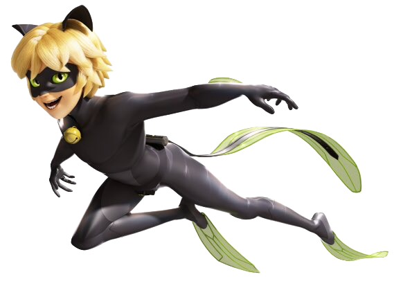
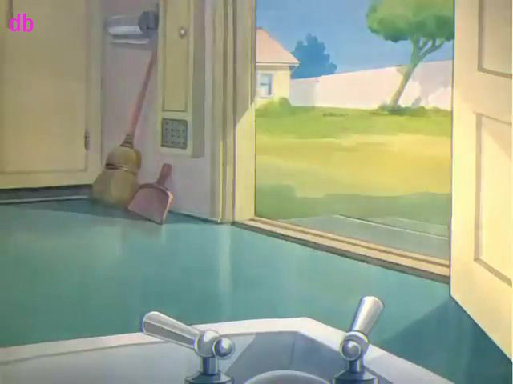
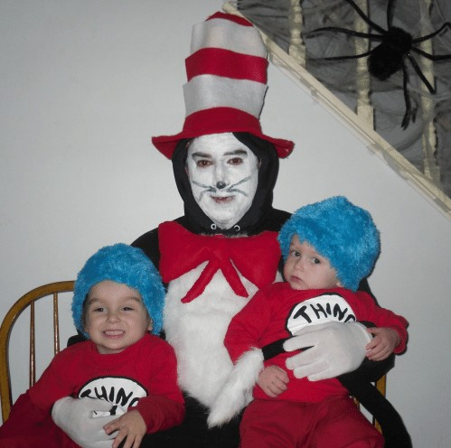
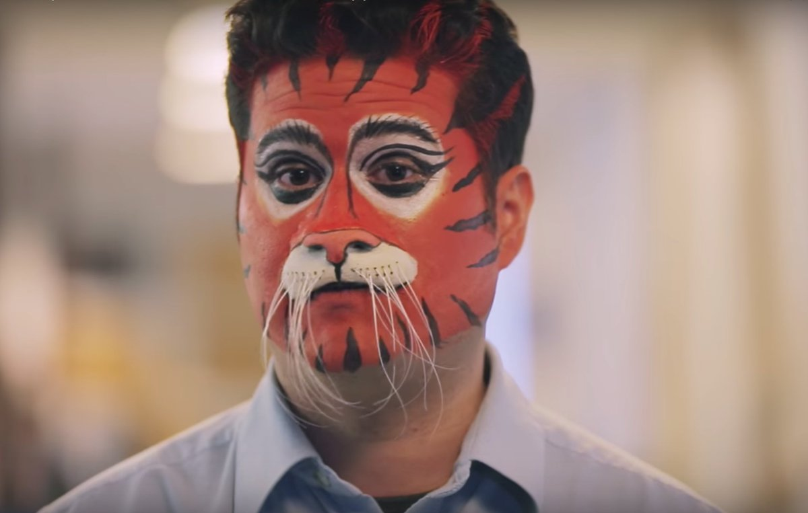
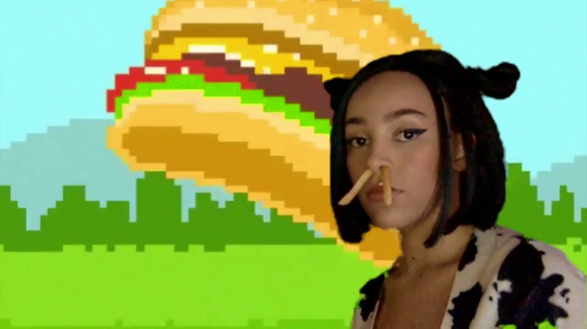
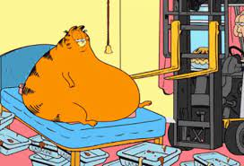

For as long as the pyramids in Egypt have been around, there've been cats, and ever since then we've been taking care of them as they've been taking care of us. There have been many notable cats throughout the years and today we're here to highlight our ten favorite feline friends.
8. Grumpy Cat
Grumpy cat, also known as Tardar Sauce, is one of the most well known animal celebrities on the internet. She was beloved by many, for her adorable little frown. Grumpy Cat was a huge sensation in the early to mid-2010s. In fact, Grumpy Cat was so popular that people featured her in movies, these movies include Grumpy Cat's Worst Christmas Ever, Lil Bub & Friendz, and Die Hard.

7. Cat Noir
Cat Noir is great, I mean anyone who's ████████████████████ would know. He's actually the only one on this list that has superpowers! He has various cat-related abilities such as night vision, enhanced hearing, and super stealth.
6. Tom from Tom and Jerry
Probably one of the most iconic caaaaaạ̶̊̓Ìa̶͒ͅä̸́Ìa̴̖̰̼̅̚a̴̡̱̻̦̗̽ă̴Ì̪̿͂å̸̽a̶̡̢̛̗͇̯̽͋̔̈́ḁ̴͉͇͒͆̒̋̾a̵͑͑͛̔̽̕͘Ì̀̽̀͘͘Ì̧̺͓̬̖͙̻̤̣̓͜ÍaÌ·Í̢̢̧̧̥̣͆͜▓à̷̌͂̉͌Į́͛ÍÌÍ̢̧̡̦̮̩͓ͅÌ̹̳a̶̅̌̂̿̽̑̔̃ÍÌÍ‘ÍŠÌ”ÌÌ©Ì—Í–Í▓▓▓██████████
██████viously this makes Tom one of the most legendary kit█████████████████████. ████████████ and ██████████████████ is no excuse for ████████████████████████ but nevertheless █████████ had to be done.
5. The Cat in the Hat
everything is ok everything is fine im fine im gonna piss on everything there's p█s everywhere ██████████████████████ █████████████████████everything is fine i feel fine its ██████████████████████████fine ████████ everything is ok piss every██████████ hat cat in the hat c at i n t he hat i dont feel oka██████████████████ ████████████████
4. Cat Woman
Cat Woman is a real girlboss, she basically invented latex...y'know. I'm not really into superheroes and that sort of shit but she seems like she wooped spiderman a couple times. Personally I'm not into it though, something about skintight costumes make me feel strangely uncomfortable, but she's probably an undebatable queen.
3. ████████████████████████
███████████████████████████████████████████████ ██████████████████████████████████████████ █████████████████████████████████████████████████ █████████████████████████████████████████████████████████████████████████████████████████████████████████████████████████████████████████████████████████████████████████████ ████████████████████████████████████████████ ███████████████████████████████████████████████████████████████████████████
████████████████████████
2. Doja Cat
Doja Cat is one of the most famous pop icons of the century. Despite that, between you and me, I don't think she's actually a cat. She hints at this in Moo! Regardless, we're still gonna put her on this list because she's literally so cool.
1. Garfield
lasagna garfield garfield jon odie lasgna spaghettie pasta pizza garfield cat meow meow moew garfield lasgagna cosmic horror garfield nya nya garfield lasagna meow purr lasagna garfield garfield garf jon garfield arbuckle lasagna italian food food food yummy mondays lasagna meow purr nya garfield mondays mondays lasanga mewow 